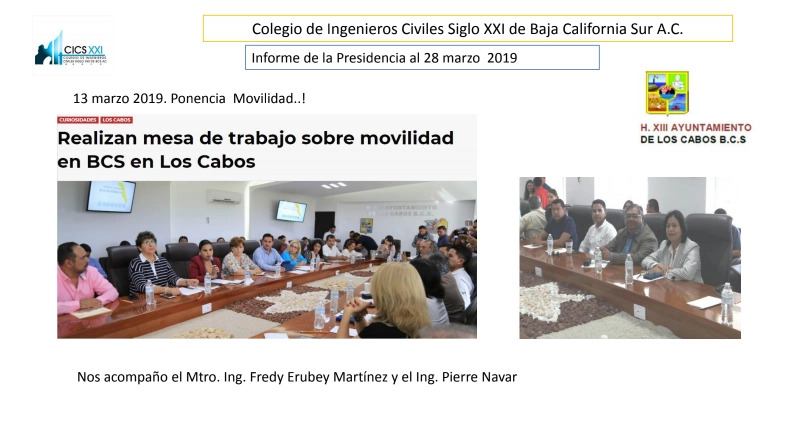
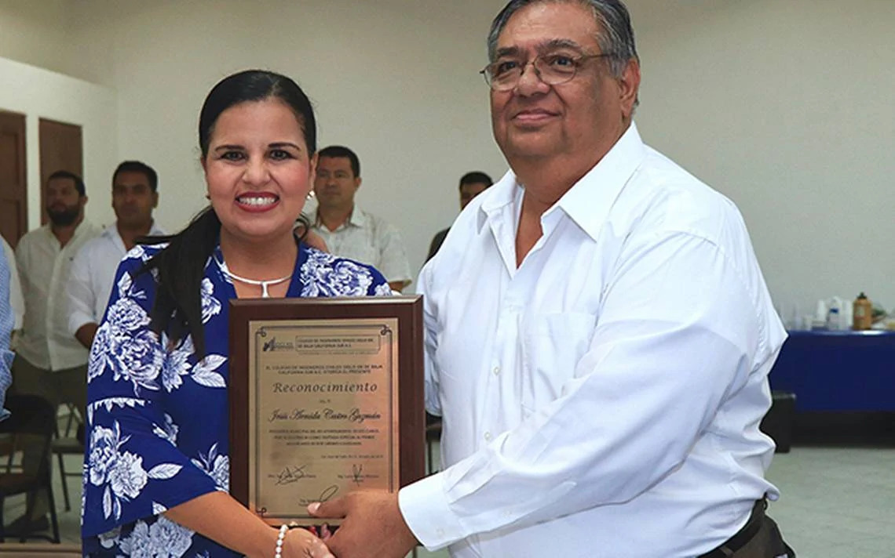

“Los primeros en llegar a un proyecto y los ultimos en irnos”
Somos un equipo de profesionales en la materia de medición topográfica, cartografía, geodesia y fotogrametría.
Ofrecer servicios profesionales de calidad en topografía, cartografía, geodesia y fotogrametría, con precisión, responsabilidad y compromiso.
Buscar la excelencia para prestar servicios de calidad, consolidándonos como una asociación de referencia en el ámbito de la topografía en Baja California Sur.

Nos acompañó el Mtro. Ing. Fredy Erubey Martínez y el Ing. Pierre Navar.
Al presidir la mesa de trabajo sobre la “Anatomía de Movilidad de Baja California Sur”, la alcaldesa Armida Castro Guzmán recalcó que el tema de movilidad es prioritario, por lo que se realizarán las mesas de trabajo necesarias para llegar a los acuerdos que beneficien al ciudadano; actualmente existe una ley y la instrucción es que se aplique.
Castro Guzmán recalcó que el H. Cabildo de Los Cabos tiene el compromiso de escuchar todas las voces y, a raíz de ello, elaborar las propuestas que sean llevadas al H. Congreso del Estado, lo cual sólo es posible con la participación activa de los ciudadanos.
Leer la nota completa →Celebrado en las oficinas de Canaco, Cabo San Lucas

Como invitada de honor en el primer aniversario del Colegio de Ingenieros Civiles Siglo XXI, la presidenta municipal Armida Castro Guzmán signó un convenio de colaboración que permitirá entablar relaciones e intercambiar servicios y capacitación en proyectos futuros para beneficio de la sociedad de Los Cabos.
En su mensaje, Armida Castro Guzmán resaltó que las asociaciones civiles se conforman por la necesidad de organizarse, trabajar y proyectar con base en las necesidades del lugar donde crecieron y realizaron su educación profesional.
“Muchas felicidades al Colegio de Ingenieros Civiles Siglo XXI, por ser determinantes en los proyectos que requiere la sociedad organizada, pero también los gobiernos. Uno de los mayores compromisos que tenemos con la sociedad es poner alto a la corrupción, modernizar, ser eficientes y equitativos en los recursos que sí hay en el municipio.”
Asimismo, en el marco de la XI reunión ordinaria del Colegio, Alejandro Valdez —a nombre de los miembros— expresó que desde hace un año se fundó la agrupación, integrada en su mayoría por jóvenes y constituida por 70 personas que buscan tener participación en proyectos a beneficio de la sociedad. También intervinieron Aurelio Acosta, con el tema de herramientas de información geográfica, y el ponente Adalberto Pérez Pérez, sobre certificación y profesionalización del ingeniero civil.
Leer la nota completa →